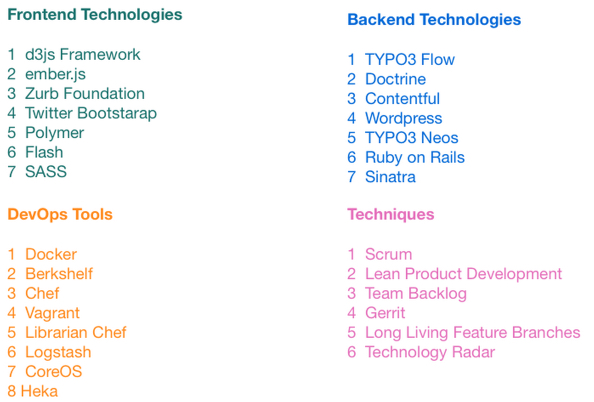

| z, ? | toggle help (this) |
| space, → | next slide |
| shift-space, ← | previous slide |
| b | blank screen |
| d | toggle debug mode |
| ## <ret> | go to slide # |
| c, t | table of contents (vi) |
| f | toggle footer |
| g | toggle follow |
| r | reload slides |
| n | toggle notes |
| p | run preshow |
| P | toggle pause |
| s | choose style |

Arbeiten in kleinen, iterativen Zyklen
Ziele:

SCRUM Board warnt vor Queueing
Nur done ist done
Kleine Tasks sind (meistens) effizienter
Große Tasks verhindern schnelles Feedback
Große Tasks zeigen oft hohes Risiko
Risikominimierung durch Aufsplittung
Zu implementieren: Suche auf Webseite
"Nice-to-have": Suche hat Auto-Complete
Gleiche Fehler tauchen immer wieder auf
Dinge gehen nur manchmal
5 Mal "Warum?" fragen
"Root Cause Analysis"
"Ich bin der festen Überzeugung, dass..."
"Meiner Meinung nach sollten wir..."
"Das liegt vermutlich an..."
Experimente bestätigen / wiederlegen These
Möglichst falisfizierbare Hypothesen
Nutzung von Daten zur Bestätigung / Widerlegung von Hypothesen
Wie finde ich die richtigen Metriken?
Wie interpretiere ich meine Metriken?
Wie messe ich Verbesserungen?
Welche Metriken helfen bei Entscheidungsfindung?
Metriken, aus denen sich Entscheidungen ableiten lassen: Actionable Metrics
Metriken, die uns nicht bei Entscheidungsfindung helfen: Vanity Metrics
Konversionsrate vs. Seitenaufrufe
Aktivierungen vs. Downloads
Durchlaufzeit vs. Story Points
Fakturierte Stunden vs. Arbeitszeit
Wie kann Innovation und Lernen "dokumentiert" werden?
Wie kann ich darüber buchhalten?
 |
 |
Methoden ausprobieren (als Team), z.B.
Methoden Evaluieren
Methoden anpassen